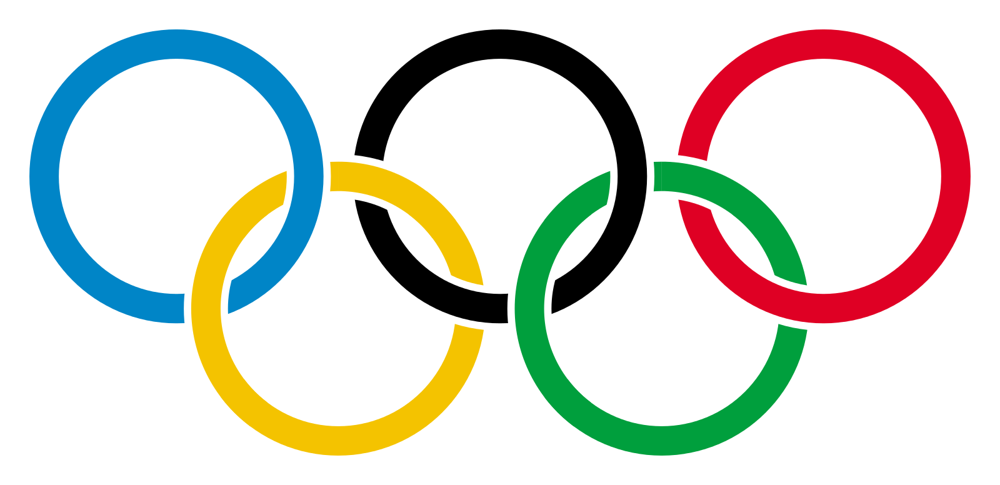

Mit is kell tudni, az olimpiai jatekokrol?
Az olimpiai játékok több sportágat magába foglaló nemzetközi eseménysorozat.

Az Olimpiai játékok ötkarikás szimbóluma, melyet a modernkori olimpiai játékok alapítója, Pierre de Coubertin báró, a modern olimpiai eszme elindítója tervezett 1913-ban. Valószínűleg az öt kontinenst, míg egy másik magyarázat szerint a sport alapelveit szimbolizálják: szenvedély, hit, győzelem, munkaerkölcs, sportszerűség.
asd
Olimpia